Adding Missing Tags for Item Sorting in Fallout 4: An Instructional Guide
Introduction
These instructions are designed for Fallout players seeking to fix a missing tag bug in Fallout 4. Despite being written for Fallout players, these instructions have been written in a way such that anyone can complete them if they know how to install mods through Nexus and use file explorer. The intention of these instructions is to teach how to patch the user’s load order in a way that allows FallUI Sorter to sort all items added or changed in Fallout 4 by their mod list. These instructions will highlight the equipment and materials needed, the completed expected result, the instructions, and a troubleshooting guide.
Equipment and Materials
- Computer
- Fallout 4 game
- FO4Edit software (click here to install)
- MO2 software (click here to install)
- Old FallUI Sorter (click here to install)
Completed Result
After successfully completing the instructions, the bug that incorrectly overwrites the tags for items will be patched. Your inventory will load correctly, and all items, vanilla and modded, will sort into the proper Sorter categories. See Figure 1 and Figure 2 for a comparison.


Instructions
- To start, open MO2. Find it by searching "Mod Organizer" on your Windows search bar.
-
In MO2, ensure all boxes on the right-hand side are selected. (Figure 3)Tip: Note the location of the run button. (But don't click it yet).Figure 3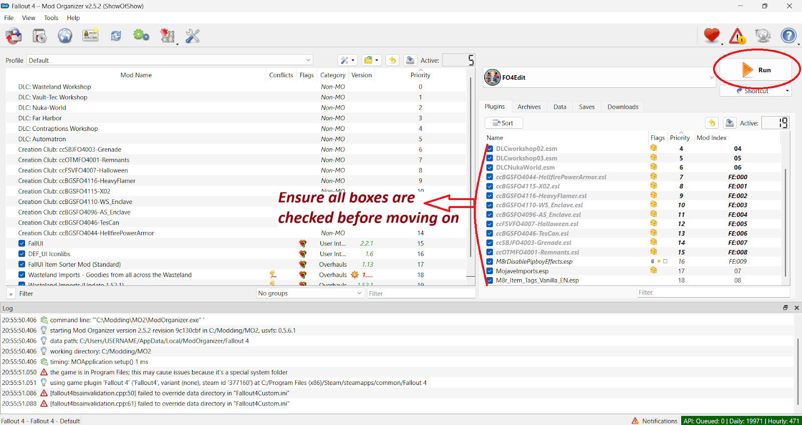Mod Organizer 2 main window with all boxes checked
-
Click on the large drop-down box to the left of the run button. Then click <Edit..>. (Figure 4)Figure 4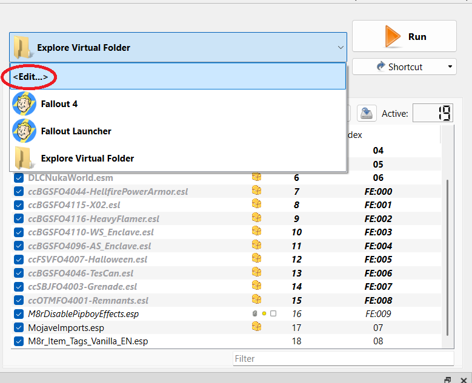Location of
in MO2 for editing executables -
Create a new executable by pressing the "plus" sign and then add from file. (Figure 5)Figure 5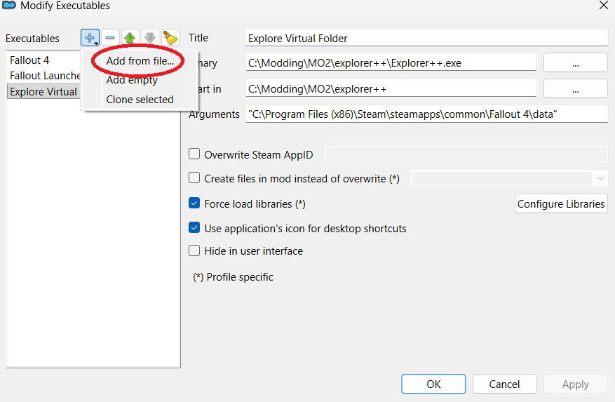Adding executable by file in MO2
-
Navigate to the file FO4Edit.exe located in the downloads folder. Select it and press "open". Then, close the window by pressing "OK". (Figure 6)Note: If you can't find the exe file then you likely didn't download it correctly. You can download the exe file from the link provided above in Equipment and Materials.Figure 6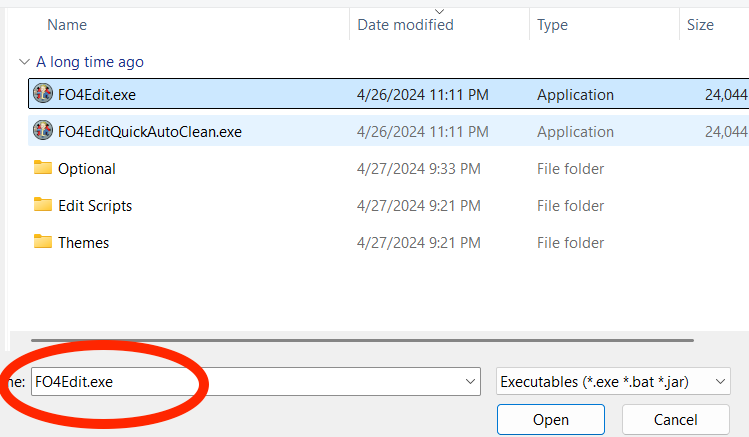Location of FO4Edit.exe in FO4Edit file
-
Press the Run button (Figure 7). The F04Edit Software will open automatically.Note: If the software doesn't open automatically quit out of the MO4 software and repeat from step 1.Figure 7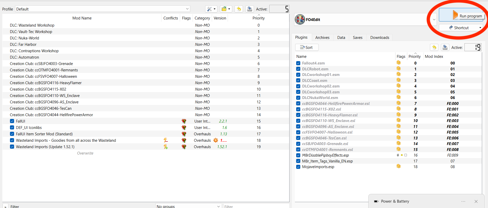Location for run button to execute FO4Edit executable
-
- After opening the software three pop ups will appear
-
Click "OK" on the first pop up about patch notes. (Figure 8)Figure 8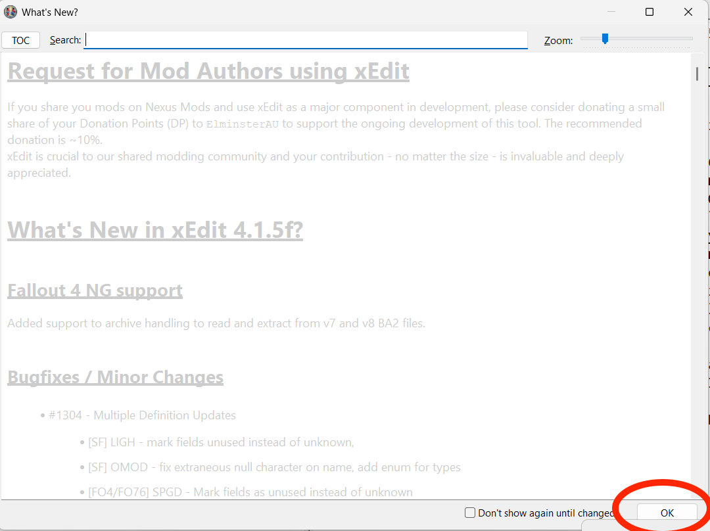Patch notes pop up
-
Click "Close" on the second about the authors. (Figure 9)Note: If you are unable to click the close button, scroll to the bottom of the please read box.Figure 9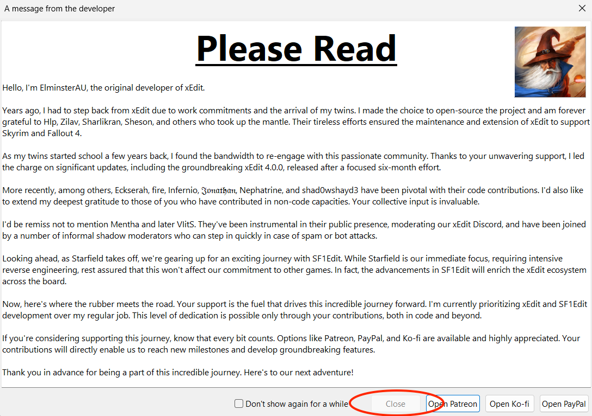Read me for authors pop up
-
The third pop up (Figure 10) will show all loaded plugins, ensure that all of them are selected and then press "OK".Tip: You are only required to select the mods that you want to modify once you know what those are. The more mods selected, the longer it takes to load.Figure 10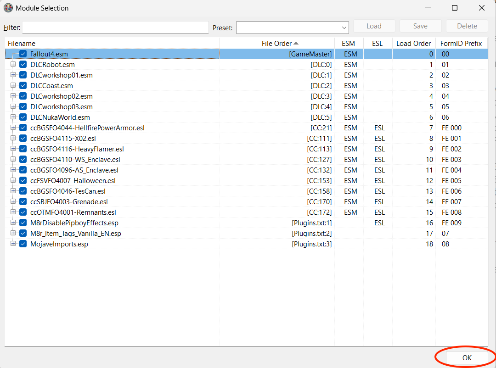Pop up for mod selection
-
-
-
Click on the search bar labeled "Filter by filename", located in the bottom-left corner of the window.
-
Search for the plugin called MojaveImports.esp.Figure 11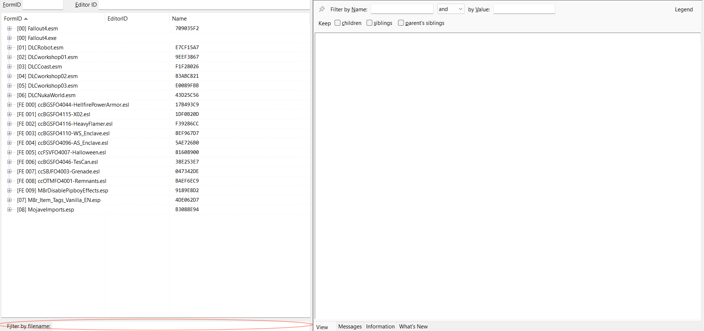Pop up for mod selection
-
Click on it to expand its items.
-
-
-
Press on the category "Ingestibles" to expand its items.Tip: When adding items that are not in these instructions, make sure to find valid tags for the item type.Note: Not all categories, like "Spells" or "Object Effect," have physical items and can be skipped. To check if the entry is a physical item, look for a FULL - Name attribute in the description.
-
Click the item Ghoul Flesh. This will open a window to the right, listing the available attributes to edit (Figure 12).Tip: The columns are split by the different plugins, found in the top row of the table.Figure 12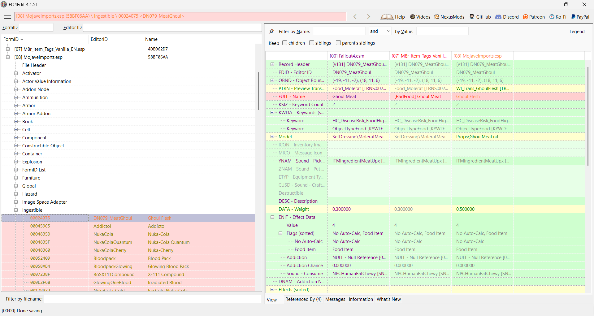Right-clicking on mod to add tagsNotice the row with the first entry FULL - Name. This is an important row that shows the tag used for sorting. For example, food items that inflict radiation damage are labeled with the tag [RadFood].
- In the "Ingestibles" tab, add a tag to all items that are missing a tag in the MojaveImports column.
-
If the item has the tag in another column, copy the tag to the right most column. (Figure 13)Tip: In order for the tag to not be overwritten and lost, make sure the right most column always has a tag.Figure 13
 Copying tag to another column
Copying tag to another column -
Find the attribute FULL - Name and right click on it. Then press edit.
-
A pop up will show up that warns about uninformed editing. Press "Yes." (Figure 14)Figure 14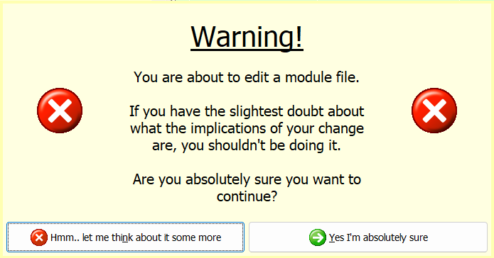Right-clicking on mod to add tags
-
Type the appropriate tag based on the naming scheme from step 4 (e.g., [RadFood] for radioactive food items).Tip: With modded items, this step is more complicated. The user has the option to tag it as any valid tag, but the mod listing and object type can help.
-
Press Enter to save the tag.
- Find all desired items to add their missing tags.
- Once complete, save all the files by clicking on the three lines at the top-left side of the software and then save.
-
Select all the files that you want to save then press "OK"
- Boot up Fallout 4 and check that the tags are sorting items in the correct places.
Notes
These instructions assume you have already installed FO4Edit and have basic familiarity with mod management through MO2. If you are new to modding, it is recommended to back up your save files before proceeding.
The process of adding tags can be time-consuming depending on how many mods you have installed. Plan to spend 30-60 minutes if you have a large mod list. You may want to focus on frequently used items first.
Some mods may already have proper tags from other patches or updates. Always check existing tags before making changes to avoid conflicts or duplicates in your load order.
If you make a mistake while editing, you can close FO4Edit without saving and restart the process. FO4Edit will not modify your files until you explicitly save them in step 7.
-